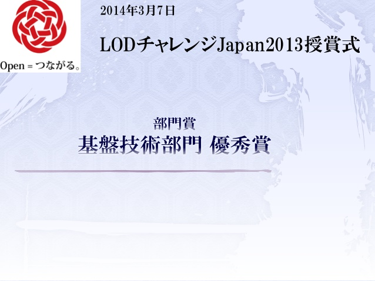

LODチャレンジ Japan 2013 基盤技術部門 優秀賞

1
1
of
5
View on SlideShare
Like this slideshow? Why not share!
Share
Email
LODチャレンジ Japan 2013 審査員特別賞 ライフサイエンス賞
by Linked Open Dataチ...
5353 views
LODチャレンジ Japan 2013 ビジュアライゼーション部門 最優秀賞
by Linked Open Dataチ...
5529 views
LODチャレンジ Japan 2013 審査員特別賞 公共LOD賞
by Linked Open Dataチ...
5412 views
LODチャレンジ Japan 2013 アプリケーション部門 最優秀賞
by Linked Open Dataチ...
5657 views
LODチャレンジ Japan 2013 データ提供パートナー賞 CiNii賞
by Linked Open Dataチ...
5171 views
LODチャレンジ Japan 2013 基盤提供パートナー賞 Remo...
by Linked Open Dataチ...
4977 views
Share SlideShare
Facebook
Twitter
LinkedIn
Google+
Email
Email sent successfully!
Embed
Size (px)
Show related SlideShares at end
WordPress Shortcode
Link